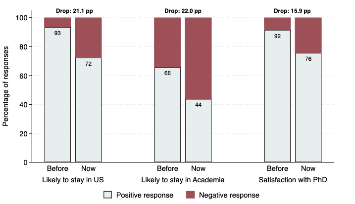
Science
The U.S. Research Talent Pipeline Is in Trouble
Harvard Business Review, 2026 · with P. Azoulay and R. Sadun
Extended version: Before the Exodus? Young Scientists and the Future of US Science, NBER WP
Abstract
Shortly after major policy changes to US science funding began in early 2025, we surveyed 916 young biomedical scientists – PhD students and postdoctoral researchers – about their career intentions and expectations. The results document a dramatic shift in sentiment. Barely half of respondents now say they are likely to remain in academia, down 22 percentage points from how they felt six months earlier. The fraction likely to stay in the United States fell by 21 percentage points. Even satisfaction with having pursued a PhD in science declined by 16 percentage points. These are not the complaints of established scientists defending their budgets, but rather the stated intentions of the next generation – the scientists who would, in ordinary times, become the principal investigators of the future.
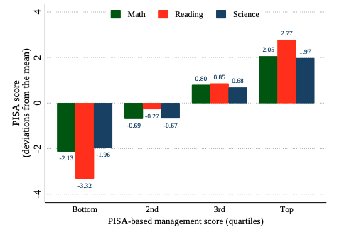
SchoolsManagement
Understanding School Management with Public Data: A New Measurement Approach and Applications (forthcoming, JPE Micro)
with C. Leaver and R. Lemos
Abstract
Why do students learn more in some schools than others? One consideration receiving growing attention is school management. To study this, researchers need to be able to measure school management accurately and cheaply at scale. We introduce a new approach to measuring management practices using existing public data and exemplify the methodology with OECD's PISA and Brazil's Prova Brasil. Both indices show a strong, positive relationship between management and learning. We highlight two example applications: an extension of the Ahktari et al (2022) analysis of political turnover and student learning, and an exploration of the mechanisms behind the key performance relationship.
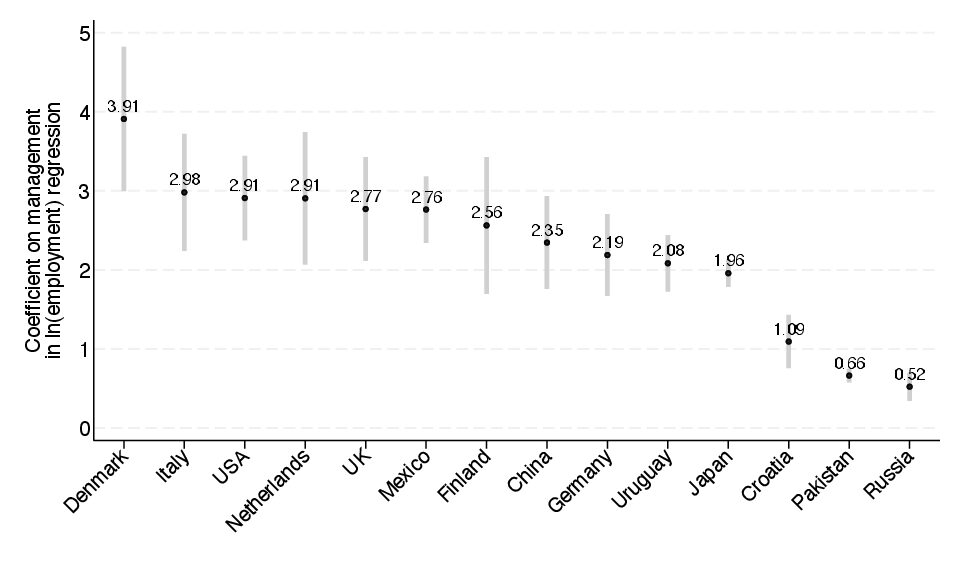
FirmsManagement
The International Empirics of Management
Proceedings of the National Academy of Sciences, 121(45), 2024 · with MOPS leaders (28 contributors)
Abstract
A country's national income broadly depends on the quantity and quality of workers and capital. But how well these factors are managed within and between firms may be a key determinant of a country's productivity and its GDP. Although social scientists have long studied the role of management practices in shaping business performance, their primary tool has been individual case studies. While useful for theory-building, such qualitative work is hard to scale and quantify. We present a large, scalable dataset measuring structured management practices at the business level across multiple countries. We measure practices related to performance monitoring, target-setting, and human resources. We document a set of key stylized facts, which we label "the international empirics of management". In all countries, firms with more structured practices tend to also have superior economic performance: they are larger in scale, are more profitable, have higher labor productivity and are more likely to export. This consistency was not obvious ex-ante, and being able to quantify these relationships is valuable. We also document significant variation in practices across and within countries, which is important in explaining differences in the wealth of nations. The positive relationship between firm size and structured management practices is stronger in countries with more open and free markets, suggesting that stronger competition may allow firms with more structured management practices to grow larger, thereby potentially raising aggregate national income.
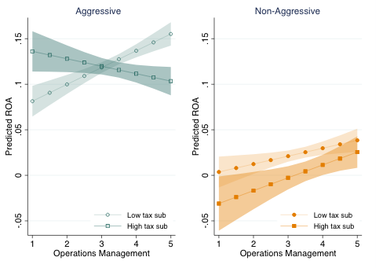
FirmsManagement
Organizational capacity and profit shifting
Journal of Public Economics, 238, 2024 · with Kat Bilicka
Abstract
Good organizational capacity drives productivity and potential taxable profits, but may also enable multinationals (MNEs) to more efficiently re-allocate profits across tax jurisdictions, lowering actual taxable profits. We show that MNE subsidiaries with better organizational capacity report significantly lower profits and have a higher incidence of bunching around zero reported profitability in high-tax countries. This pattern is not present in low-tax countries. Further, responsiveness to corporate tax rate changes in terms of profit reporting is driven by firms with good organizational capacity. We show our results are consistent with profit-shifting behavior and rule out key alternative channels.
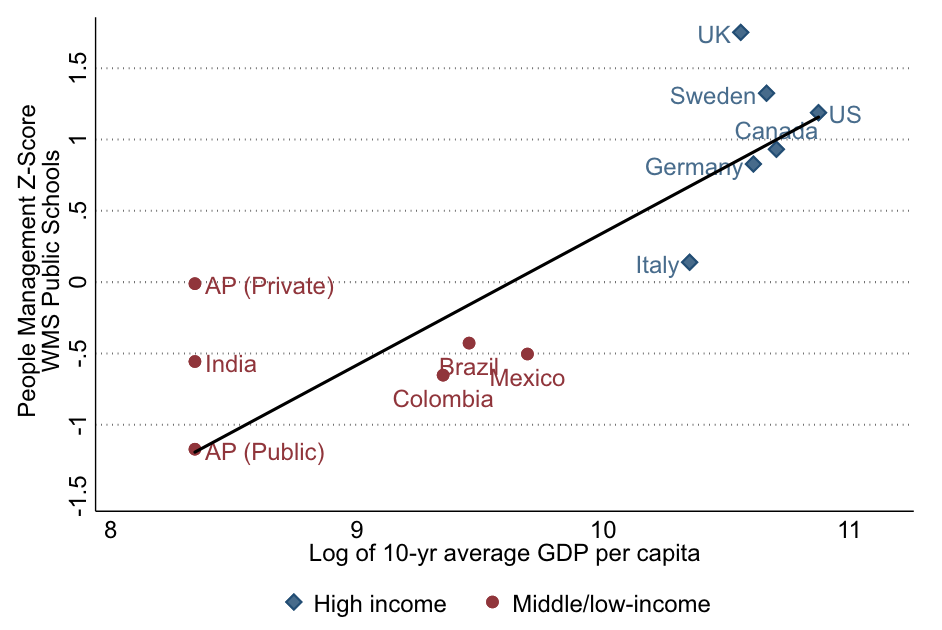
SchoolsManagement
Personnel Management and School Productivity: evidence from India
The Economic Journal, 134(661), 2024 · with R. Lemos and K. Muralidharan
Abstract
This paper uses new data to study school management and productivity in India. We report five main results. First, management quality in public schools is low, and ~2 standard deviations below high-income countries with comparable data. Second, private schools have higher management quality, driven by much stronger people management. Third, people management quality is correlated with independent measures of teaching practice, as well as school productivity measured by student value added. Fourth, better-managed schools have lower variation in within-school teacher effectiveness and higher levels of minimum teacher effectiveness. Fifth, consistent with better people management, teacher pay in private schools is positively correlated with teacher effectiveness, whereas we find no such correlation in public schools.
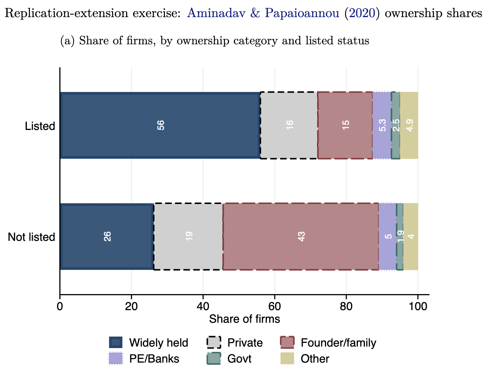
FirmsManagement
Revisiting the World Management Survey in Strategy: Applications to Theory and Replication
Strategy Science, 9(1), 2024 · with S. Wolfolds
Abstract
The academic field of strategy has a strong history of developing theories and frameworks to explain real-world phenomena, but a relatively younger empirical literature testing these theories. Partly due to the nature of questions in strategic management, scholars have often relied on collecting their own data or using specialized, and often expensive, proprietary data. This limits the possibility of replication exercises, which are a key step to refining and reinforcing the theories that are most supported in practice. To support this effort, we revisit the World Management Survey (WMS): a cross-country, cross-industry survey dataset with over 20,000 observations at the establishment-level that is collected through a rigorous and well-documented process and made free and accessible to researchers. While it is well-cited in the strategy literature, we propose it is underused and better exposure to this data's offerings has the potential to add significant value to the field.
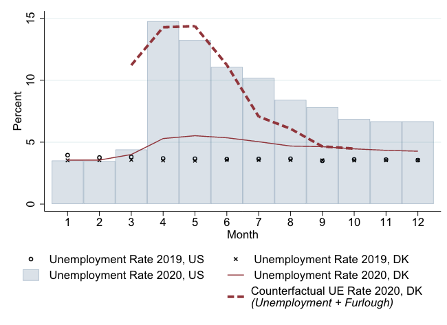
Firms
The effect of preserving job matches during a crisis
Labour Economics, 84, 2023 · with M. Bennedsen, B. Larsen and I. Schmutte
Abstract
It is generally difficult to measure the importance of preserving worker-firm relationships, particularly for low-wage jobs that involve general skills. The COVID-19 pandemic led to the sudden and seemingly temporary disruption of millions of otherwise productive employment relationships around the world. Using novel administrative and survey data from Denmark, we study a policy where firms paid up to 25% of wages to furlough instead of firing workers. We find that aid-taking firms furloughed about 24pp more workers, a large share of whom would have otherwise been laid off, and this had a positive impact on subsequent firm survival, employment growth and sales. Further, we find firms derive value from maintaining ties to low-wage and blue collar workers and that preserving those matches is beneficial to firms, suggesting policies that preserve job matches may help speed-up recovery.
Covered on: The Economist, VoxEU. First draft: COVID Economics, Issue 27, 9 June 2020
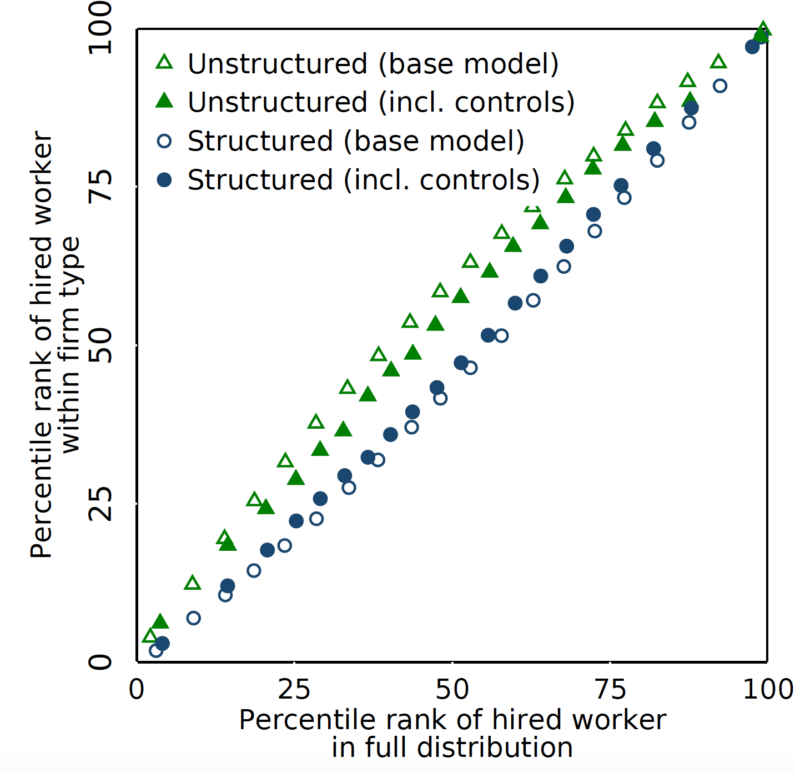
FirmsManagement
Building a productive workforce: the role of structured management practices
Management Science, 67(12), 2021 · with C. Cornwell and I. Schmutte
Abstract
In an influential study, Bender et al (2018) document consistent relationships between management practices, productivity, and workforce composition using administrative data from German firms matched to ratings of their practices from the World Management Survey. We replicate and extend their analysis using comparable data from Brazil. The main conclusions from their study are supported in ours, strengthening the view that more structured practices affect organizational performance through workforce selection across different institutional settings. However, we find more structured management practices are linked to greater wage inequality in Brazil, relative to greater wage compression in Germany, suggesting that some of the consequences of adopting structured practices are tied to the local context.
Covered on: IDE Inclusive Innovation, MIT Ideas made to matter, Business Insider
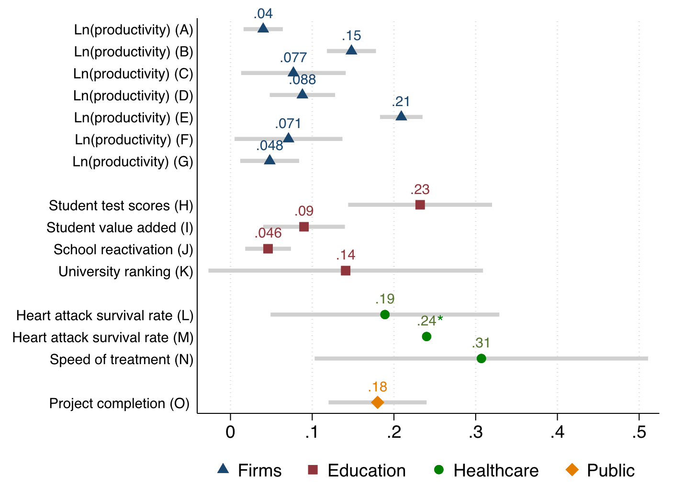
Management
The World Management Survey at 18: lessons and the way forward
Oxford Review of Economic Policy, 37(2), 2021 · with N. Bloom, R. Lemos, R. Sadun and J. Van Reenen
Abstract
Understanding how differences in management "best practices'' affect organizational outcomes has been a focus of both theoretical and empirical work in the fields of management, sociology, economics and public policy. The World Management Survey (WMS) project was born almost two decades ago with the main goal of developing a new systematic measure of management practices being used in organisations. The WMS has contributed to a body of knowledge around how managerial structures, not just managerial talent, relates to organizational performance. Over 18 years of research, a set of consistent patterns have emerged and spurred new questions. We will present a brief overview of what we have learned in terms of measuring and understanding management practices and condense the implications of these findings for policy. We end with an outline of what we see as the path forward for both research and policy implications of this research programme.
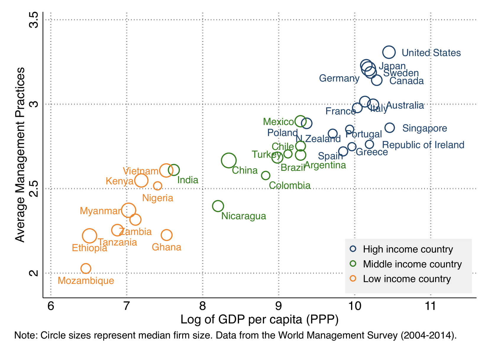
FirmsManagement
International Data on Measuring Management Practices
American Economic Review: Papers & Proceedings, 106(5), 2016 · with N. Bloom, R. Lemos, R. Sadun and J. Van Reenen
Abstract
Rapid advances in computer power and increased openness of national statistical agencies have led to unprecedented availability of large datasets. Consider three types of firm datasets. First, governments collect administrative data on firms: information on jobs, investment and output has long been collected to calculate national, industrial and regional statistics. Second, there has been an explosion of Big Data — various forms of data typically created for business purposes. Products like ORBIS contain over 50 million firms from almost every country in the world and can be used to address many questions. Another example is Compustat, which contains extensive data for about 6,000 listed US firms but excludes the other 99% of private firms. We focus on a third type of international firm data, which is collected from surveys. In an age of rich administrative and Big Data why bother with such surveys?
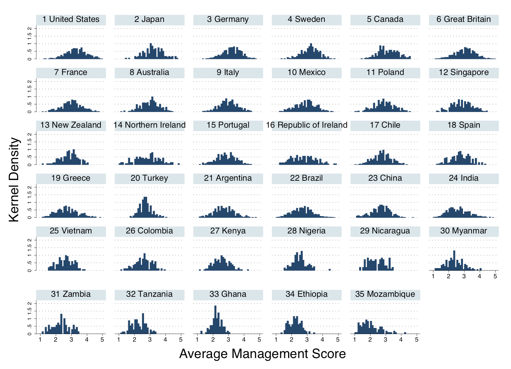
Management
The New Empirical Economics of Management
Journal of the European Economic Association, 12(4), 2014 · with N. Bloom, R. Lemos, R. Sadun and J. Van Reenen
Abstract
Over the last decade the World Management Survey (WMS) has collected firm-level management practices data across multiple sectors and countries. We developed the survey to try to explain the large and persistent total factor productivity (TFP) differences across firms and countries. This review paper discusses what has been learned empirically and theoretically from the WMS and other recent work on management practices. Our preliminary results suggest that about a quarter of cross-country and within-country TFP gaps can be accounted for by management practices. Management seems to matter both qualitatively and quantitatively for performance at the level of the firm and the nation. Competition, governance, human capital, and informational frictions help account for the variation in management. We make some suggestions for both policy and future research.
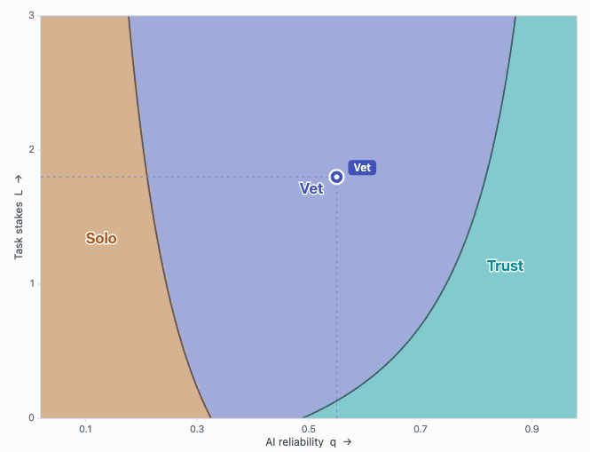
AIManagement
Everyone Is a Manager: AI Use as an Act of Management
with B. Leyden
Abstract
When a knowledge worker is given an AI assistant, they stop executing tasks and start delegating them. Thus, we propose that the use of AI is an act of management, which helps explain the heterogeneity in returns to AI use observed across firms. We model the return to AI as moderated by two managerial abilities: direction (how well the worker specifies what they delegate) and verification (how reliably they catch the tool's errors). As AI becomes more reliable, the skill with the higher marginal return shifts from verification to direction. To the extent that use builds skill, workers develop their managerial abilities in the normal course of work, but as the tool improves, direction will continue to build while verification will not. As increasingly fewer tasks are worth checking, the skill collapses. Workers will reach that point sooner if they only bear part of the cost of their errors. In equilibrium, the strongest verifiers tend to sort into the jobs where collapse is most costly.
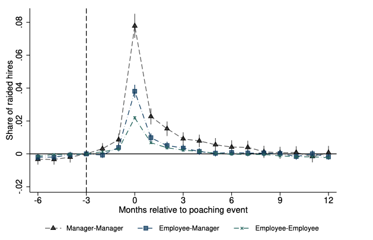
Firms
Poaching, Raids, and Managerial Compensation (submitted)
with Y. Chen, F. Dal Ri and T. Jungbauer
Abstract
This paper presents a model of employee poaching with asymmetric employer learning. Firms poach managers not only due to their track record but also for their personnel-specific information about workers. In equilibrium, more productive firms poach managers, whose compensation increases in the quality of their information about workers. While poaching reassigns more able workers to more productive firms, efficiency does not obtain due to information frictions. Drawing on the universe of contracts in Brazil's formal labor market, we test implications of our model and show they are consistent with manager and worker movements and their compensation histories.
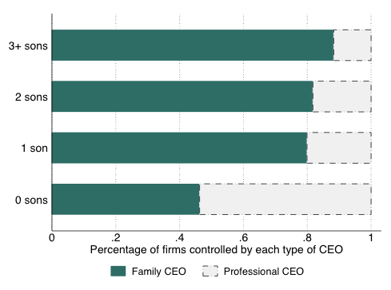
FirmsManagement
The ties that bind: implicit contracts and the adoption of management technology in the firm
with R. Lemos and S. Quinn (draft circulating)
Abstract
We investigate how implicit contracts between firm managers and employees are linked to the adoption of productivity-enhancing organizational practices. We collect new data on ownership successions and show the first causal evidence that maintaining family control leads to lower adoption of managerial best practices. We use gender composition of the outgoing CEO's children as identifying variation at the succession point. We explore firm "reputation costs" as a novel mechanism constraining investment in management, and build a new proxy using data on eponymy — firms named after the family name. We find suggestive evidence that implicit contracts matter for management adoption.
Covered on: World Bank Development Impact blog, The Economist, LSE Business Review, VoxDev. Awarded Accessit Best Paper at IOEA 2018.
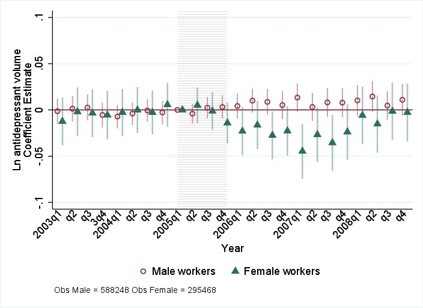
FirmsMental Health
Pay Transparency and Mental Health (preparing for submission)
with M. Bennedsen, E. Simintzi, M. Tsoutsoura and D. Wolfenzon
Abstract
This paper explores the impact of pay transparency on worker well-being. We exploit a pay transparency legislation in Denmark that requires firms with more than 35 employees to disclose pay information by gender. Using detailed employee and mental health prescription administrative data, we use two empirical strategies, Difference-in-Differences and Regression Discontinuity Design. Our results suggest that the legislation led to a short-run decline in the relative growth rate of anti-depressant use for women in affected firms. We consider two competing mechanisms behind this result: the potentially negative impact of horizontal (peer) comparisons and the potentially positive impact of organizational changes leading to the reduction of pay disparity. Taken together, our results are not consistent with a horizontal wage comparison mechanism and the evidence points to the second mechanism being the dominant force.
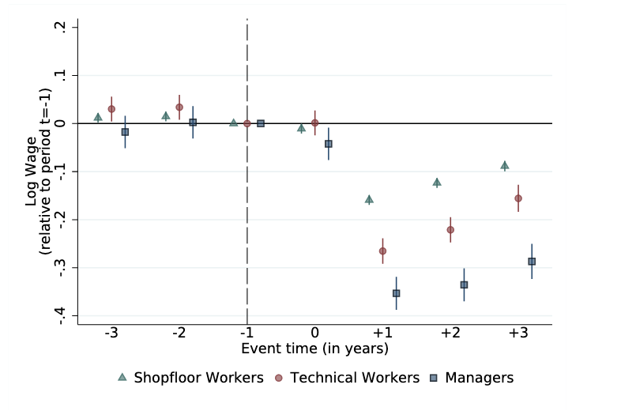
Firms
Displacement Events and Job-Driven Scarring (draft circulating)
with I. Schmutte and F. Dal Ri
Abstract
We study how job loss affects the earnings, employment, and wage of managers. Using event studies around mass layoff events for Brazilian firms we find that, on average, displaced workers lose around 60 percent of their earnings in the year after job loss, and after three years have earnings 25 log points below comparable non-displaced workers. The earnings effect comes from a sharp, but temporary drop in the number of months worked per year, combined with a sharp but persistent drop in wages of around 20 log points. For managers, the wage penalty is over twice as large relative to non-managers. Less than 15 percent of the wage losses for managers can be explained by movements to employers that pay all workers less. Taken together, these results are consistent with a model in which managers either accumulate significant job-specific rents that are destroyed on separation, or they face worse market conditions and scarring after displacement, perhaps because they held responsible for the mass displacement event that precipitated their termination.
Government
Municipal state capacity and "day-to-day" floods (data collection stage)
with Michael Best, Vansh Gupta and Renata Lemos
Research questions: What do municipal governments do? How do large shocks (such as natural disasters or health crises) affect government activities and service delivery? What types of state capacity determine local governments' ability to respond effectively to natural disasters?
SchoolsManagement
School management and principal training: evidence from Puerto Rico (RCT completed, drafting stage)
with Gustavo Bobonis and Marco Gonzales-Navarro
Research question: Five-year randomized control trial to assess the impact of a principal training program in Puerto Rico.
ScienceManagement
Managing science: management in scientific labs (data collection stage)
with Pierre Azoulay, Paul Niehaus, Raffaella Sadun, John Van Reenen, Heidi Williams
Research questions: How are scientific labs managed? How does the type of management practices used in a lab correlate with lab performance and culture?
AIScienceManagement
Managing science: an AI management coach for scientific labs (proposal stage)
Research questions: Can an evidence-grounded AI management coach change how scientific labs are managed? Does better lab management improve research output and the careers of lab members? Which management problems do scientists actually bring to a coach?